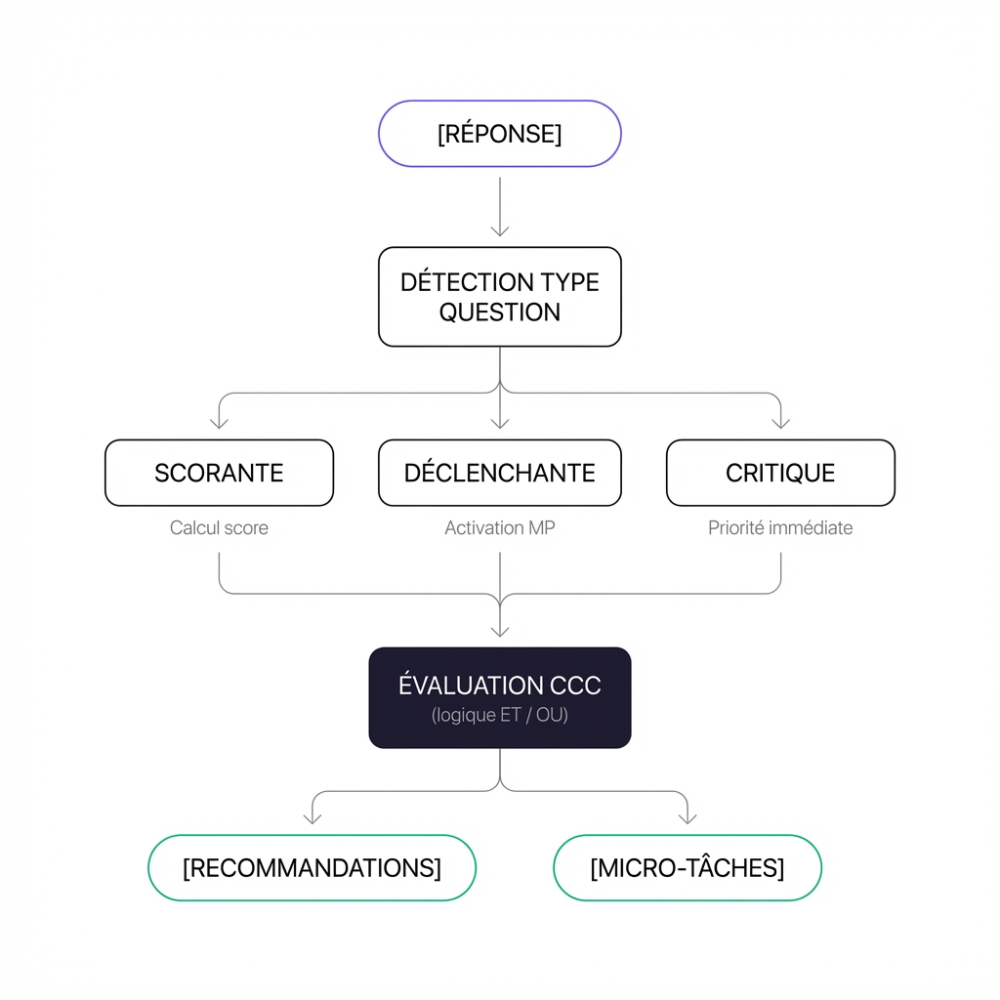

Section 3
03 / 08
Fonctionnement du Moteur

Typologie des questions
| Type | Fonction moteur |
|---|---|
| Scorante | Incrémente le score de vulnérabilité |
| Déclenchante | Active un micro-parcours spécifique |
| Critique directe | Force une priorité niveau 1 (≤7 jours) |
| Descriptive | Contexte, pas d'effet algorithmique |
Priorisation automatique
| Niveau | Déclencheur | Délai |
|---|---|---|
| 1 | Question critique directe | ≤ 7 jours |
| 2 | CCC activée | ≤ 15 jours |
| 3 | Score + déclenchantes | > 1 mois |